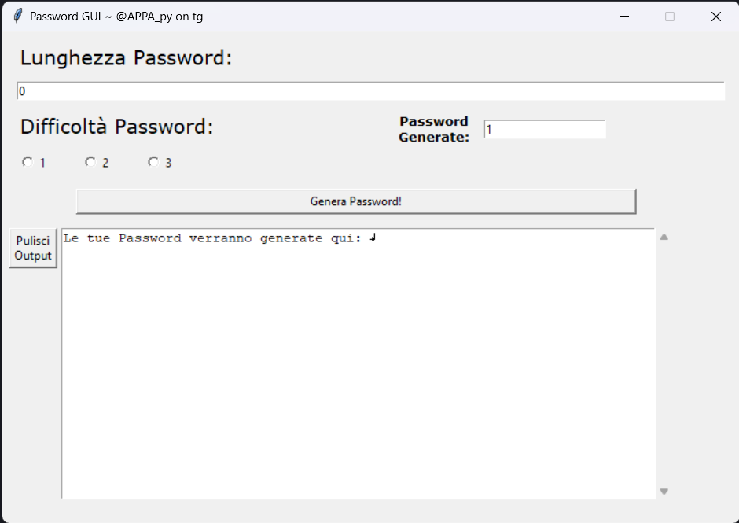

Come è nata l'idea
L'idea è nata quando qualche giorno fa mi hanno hackerato l'account Instagram, quindi ho detto "ora metto una password impossibile" quindi poi ho creato un Pacchetto Python che crea password di qualsiasi lunghezza e con 3 livelli di difficoltà.
Fase di Sviluppo
La fase di sviluppo è stata abbastanza semplice alla fine con random metteva caratteri random per generare una password. La funzione base è quella di creare una password con x caratteri e con 3 livelli di "difficoltà", il primo livello è di sole lettere, il secondo lettere e numeri, invece il terzo con lettere numeri e caratteri speciali. Poi ho aggiunto la possibilità di generare x numeri di password, perciò 10/20 password di fila. Poi, poi creare una "wordlist" di password create dal sistema con un parametro che dice il tempo impiegato dal sistema per elaborare e scrivere le password.
Come Utilizzare il Pacchetto
L'utilizzo del pacchetto è molto semplice, il download si trova sul mio github, il reposity si chiama
PasswordGenerator-Package.
Una volta scaricato il pacchetto ha diverse funzionalità:
1. Funzione base,ovvero, crea una password specificando la lunghezza e il livello di difficoltà;
2. Creare più password consecutive, ovvero, che con una riga di codice crea un numero scelto dall'utente di password;
3. Creare una WordList di password generate dal sistema.
Inseriamo la cartella PasswordGenerator nella cartella del progetto, dal pacchetto PasswordGenerator importiamo PasswordGenerator. Quindi
salviamo in una variabile generator il PasswordGenerator specificando la lunghezza della password e il livello di difficoltà:
from PasswordGenerator import PasswordGenerator
Una volta stampato la variabile generator otteniamo un output con una serie di lettere/numeri/caratteri speciali messi insieme. Poi ovviamente
bisogna specificare la lunghezza della passowrd, quindi più è lunga, più combinazioni tra lettere/numeri/caratteri speciali ci saranno.
generator = PasswordGenerator([lunghezza paassword], [livello di difficoltà da 1 a 3])
print(generator)
- Come creare una serie consecutiva di Password
Per creare una serie consecutiva di password è molto semplice:
1. Associamo ad una variabile generator il PasswordGenerator;
2. Succesivamente, con l'import PasswordGenerator utiliziamo il metodo PasswordAmount;
3. Specifichiamo i parametri del metodo PasswordAmount, ovvero il generator e la quantità di password che si vogliono generare;
Ora ti faccio un esempio pratico con un codice:
from PasswordGenerator import PasswordGenerator
In questo caso la nostra variabile generator sarà generator e una voltà aver avviato il programma, il sistema stamperà
la quantità di password scelta.
generator = PasswordGenerator([lunghezza password], [livello di difficoltà da 1 a 3])
PasswordGenerator.PasswordAmount([variabile generator], [quantità password da generare])
- Come creare una WordList
Per creare una WordList con il pacchetto PasswordGenerator è molto semplice:
1. Associamo, come detto precedentemente, ad una variabile gemerator il PasswordGenerator (specificando tutti gli argomenti);
2. Utiliziamo il metodo createWordList;
3. Ora specificando il generator, il nome del file con qualsiasi estenzione, le quantità di password e infine
se vogliamo specificare quanto tempo ci ha messo il programma a generare le password.
Te lo spiego il tutto con un esempio:
from PasswordGenerator import PasswordGenerator
Ora, una volta avviato il programma, nella cartella del progetto o nel percorso scritto, apparirà il fila che se apertò avrà al suo interno
tutte le combinazioni di password e quantità di password scelte.
generator = PasswordGenerator([lunghezza password], [livello di difficoltà da 1 a 3])
PasswordGenerator.createWordList([variabile generator], [nome del file], [quantità di password], [specificare se si vuole dire il tempo impiegato (facoltativo)])
- Usare la GUI
Per usare la GUI è molto semplice. Dal file che si trova nel pacchetto PasswordGenerator importiamo PasswordGUI.
Per avviare la GUI utiliziamo il metodo mainloop, ora ti spiego con un semplice esempio:
from PasswordGenerator.gui import PasswordGUI
Questo è l'output che ci aspettiamo di avere se abbiamo eseguito tutto correttamente:
passwordGui = PasswordGUI()
passwordGui.mainloop()

Come possiamo notare, la gui è molto intuitiva perché ci dice di inserire la lunghezza della password, il livello di difficoltà e la quantità di password generate. Come fare il tutto l'ho spiegato precedentemente. \